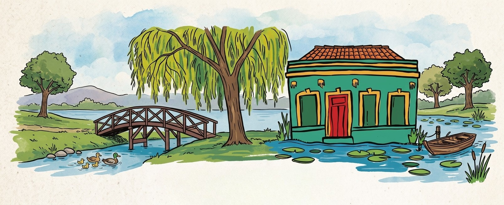
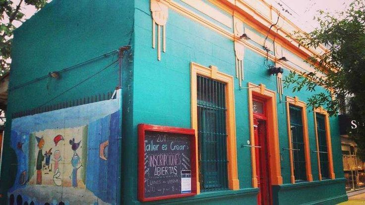

LAGUNAS
culturas comunidades habitats
¡Bienvenidos al Proyecto Lagunas!
Un espacio de encuentro, diálogo e intercambio que propone pensar colectivamente la relación de la ciudad de Resistencia con sus lagunas, comunidad y hábitats. Un recorrido de sentipensar nuestro territorio.
Saber más
Cartografía Sensible
Explorá las lagunas de nuestra ciudad.
Agenda Chigaqaama
15
NOV
Recorrido en Bicicleta
Exploración poética de las lagunas del norte.
18
NOV
Foro Lagunas
Jornada de diálogo entre vecinos y gestores culturales.
22
NOV
Muestra Alba Lo'opi
Exposición de la cooperativa de artesanos locales.